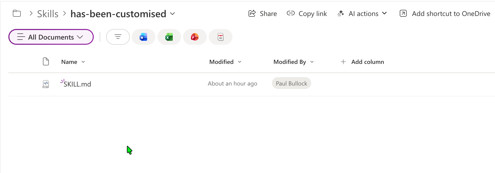

Upload SharePoint AI Skills to Agent Assets
Summary
This sample uploads a local SKILL.md file into the SharePoint AgentAssets/Skills/<folder> location for a site where Agent Assets are enabled. It checks the site feature, validates that the Agent Assets library exists, resolves the target folder, and uploads the skill file.

Implementation
- Open PowerShell 7+ and install/connect PnP PowerShell.
- Save your skills markdown file locally (default expected name is
SKILL.md). - Update parameters for your target site and folder.
- Run the script from the same folder as your skill file.
Note: The skill itself is largely untested, just an illustration of where to upload the skill to SharePoint.
<#
----------------------------------------------------------------------------
Created: Paul Bullock
Date: 04/05/2026
.Example
./Set-SiteAISkills.ps1 -SiteUrl "https://<tenant>.sharepoint.com/sites/Site1" -ClientId "<application-client-id-for-pnp-powershell>" -SkillFolderName "has-been-customised" -SkillFileName "SKILL.md"
.Notes
https://pnp.github.io/powershell/cmdlets/Get-PnPFeature.html
https://pnp.github.io/powershell/cmdlets/Resolve-PnPFolder.html
https://pnp.github.io/powershell/cmdlets/Add-PnPFile.html
----------------------------------------------------------------------------
#>
[CmdletBinding()]
param (
$SiteUrl = "https://<tenant>.sharepoint.com/sites/Site1", #SharePointAISkills
$ClientId = "<application-client-id-for-pnp-powershell>",
$SkillFolderName = "has-been-customised",
$SkillFileName = "SKILL.md"
)
begin {
# ------------------------------------------------------------------------------
# Introduction
# ------------------------------------------------------------------------------
Write-Host " This script will set SharePoint skills into the Agents Assets library" -ForegroundColor Green
# ------------------------------------------------------------------------------
$featureName = "AgentAssets"
$featureId = "9e14d30c-1e0d-4c8c-8dcb-a8d29f7d4c15"
$baseSkillsFolderName = "Skills"
$agentAssetsLibraryName = "AgentAssets"
}
process {
Connect-PnPOnline -Url $SiteUrl -ClientId $ClientId -Interactive
# Check if feature is activate and get the document library called "Agent Assets"
$agentAssetsFeature = Get-PnPFeature -Identity $featureId -Scope Site
if ($null -ne $agentAssetsFeature) {
Write-Host "Feature $featureName is activated." -ForegroundColor Green
# Check if the "Agent Assets" library exists
$library = Get-PnPList -Identity $agentAssetsLibraryName -ErrorAction SilentlyContinue
if ($library) {
Write-Host "Document library '$agentAssetsLibraryName' exists as expected" -ForegroundColor Cyan
# Ensure Folder called Skills Exist
Write-Host "Ensuring folder '$baseSkillsFolderName' exists in library '$agentAssetsLibraryName'..." -ForegroundColor Cyan
$targetFolderPath = "$agentAssetsLibraryName/$baseSkillsFolderName/$SkillFolderName"
$targetFolder = Resolve-PnPFolder -SiteRelativePath $targetFolderPath
if ($null -ne $targetFolder) {
# Uploading the SKILL file to the library in the subfolder
Write-Host "Uploading skill file '$SkillFileName' to '$targetFolderPath'..." -ForegroundColor Cyan
Add-PnPFile -Path "$SkillFileName" -Folder $targetFolderPath
Write-Host "Skill file '$SkillFileName' uploaded successfully to '$targetFolderPath'." -ForegroundColor Green
}else{
Write-Host "Folder '$targetFolderPath' does not exist. Skipping folder creation and file upload." -ForegroundColor Yellow
}
}
}
else {
Write-Host "Feature $featureName is not activated. Please activate the Site Collection feature to create the 'Agent Assets' library." -ForegroundColor Red
}
}
end {
Write-Host "Done! :)" -ForegroundColor Green
}
Check out the PnP PowerShell to learn more at: https://aka.ms/pnp/powershell
The way you login into PnP PowerShell has changed please read PnP Management Shell EntraID app is deleted : what should I do ?
Contributors
| Author(s) |
|---|
| Paul Bullock |
Disclaimer
THESE SAMPLES ARE PROVIDED AS IS WITHOUT WARRANTY OF ANY KIND, EITHER EXPRESS OR IMPLIED, INCLUDING ANY IMPLIED WARRANTIES OF FITNESS FOR A PARTICULAR PURPOSE, MERCHANTABILITY, OR NON-INFRINGEMENT.